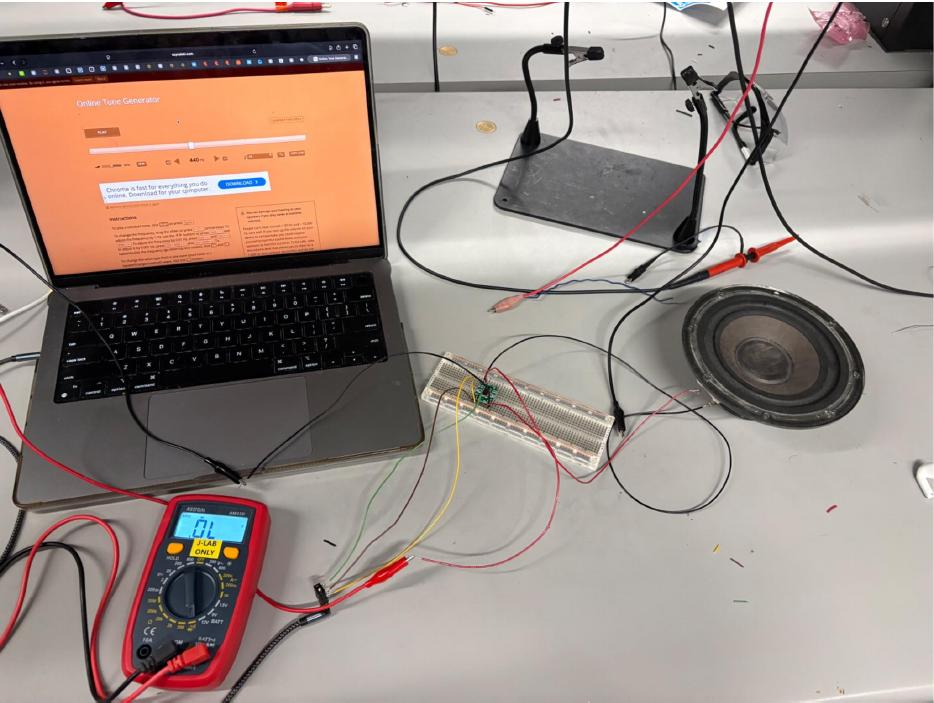
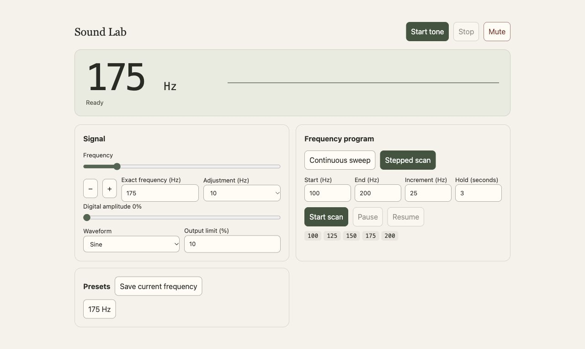

Building My Own Sound Lab
Hardware
I soldered and wired together a small speaker, a PAM8403 audio amplifier, and a 3.5 mm audio jack. An external power supply powers the amplifier so I can send sound from my laptop to the speaker.

Software
I used Codex to make an interface that controls frequency, amplitude, and waveform. It also runs continuous frequency sweeps and stepped scans that hold each frequency for a set time.

Purpose
I want to see how water, sand, and plastic wrap respond to sound vibrations. Building the hardware and software gives me a way to change the signal and watch what happens.